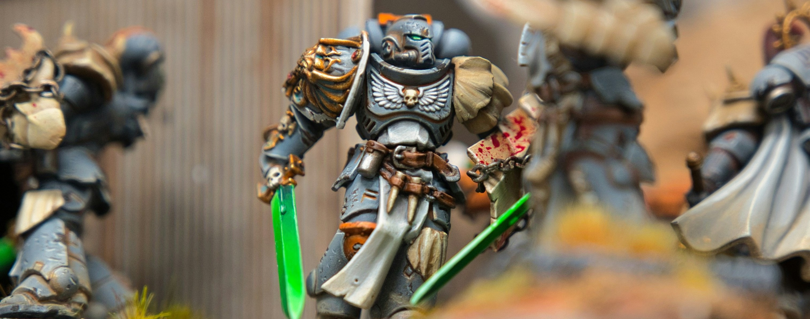

Warhammer is a tabletop game that is played with miniatures. Players take turns moving their miniatures around the table and attacking each other. The goal of the game is to defeat your opponent's army.
There are many different armies to choose from, each with their own strengths and weaknesses. Players can choose to play as Space Marines, Orks, Eldar, or many other factions.
Players can also customize their armies by painting their miniatures and adding special rules to their units. This allows for a lot of creativity and personalization in the game.
At HGHS, we play Warhammer against each other at times. Check out the rules here from Games Workshop, the developers of Warhammer 40K.
Bring your models for short skirmishes. Armies of 500 points are allowed, and short battles take place on tables.

Photo by Samuel Fortin on Unsplash